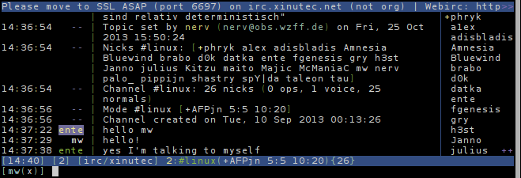

Weechat
Weechat is a ncurses based IRC client. It currently does not support assigning a CA on a per per-network basis, so you will have to configure the Xinutec CA as the global CA, which means the Xinutec CA will be trusted to sign the certificates of any IRC network this instance of weechat will connect to via SSL. This is a small security bug the author intends to fix within the next few releases. See this bug report for status updates.
First, download the
CA certificate. Save this under
~/.weechat/ssl-certificates.pem. Then, set this as the default CA for all IRC
networks as follows:
/set weechat.network.gnutls_ca_file ~/.weechat/ssl-certificates.pem
Add all other CA certificates of networks you want to connect to securely, e.g.
for freenode you might need a CA called
UTN_USERFirst_Hardware_Root_CA.pem,
so if you're running Debian, you need to do this:
cat /etc/ssl/certs/UTN_USERFirst_Hardware_Root_CA.pem >> ~/.weechat/ssl-certificates.pem
Repeat this for all CA certificates where establishing the connection fails.
The name of the CA certificate you need to concatenate to the
~/.weechat/ssl-certificates.pem file will appear somewhere in the as
"issuer". Look in
/etc/ssl/certs for a file with a corresponding name.
Now you can add the server:
/server add xinutec irc.xinutec.net/6697 -ssl
There are more flags than
-ssl, most importantly also
-autoconnect. See
/help server for more information.
Finally, connect the newly created server:
/connect xinutec
See you there!
